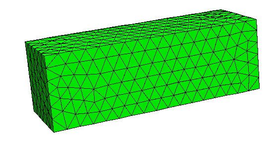
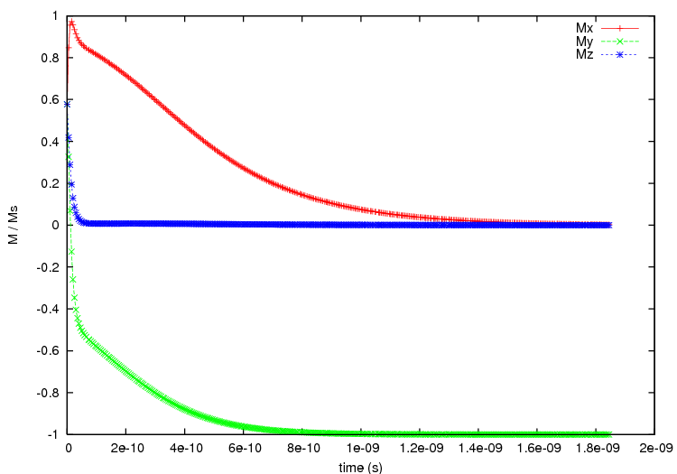

2.18. Example: 2D periodicity¶
This example is another application of the macro-geometry feature, where we now deal with a 2D “thin film” system. The unit cell is a 30x10x10 nm^3 prism
where we take 10 copies in x- and 40 copies in y-direction to create the macro geometry.
The script no_periodic.py simulates behaviour of just the unit cell of size 30x10x10 nm^3 (without any periodic copies):
import nmag
from nmag import SI, every, at
# define magnetic material
Py = nmag.MagMaterial(name="Py",
Ms=SI(1e6,"A/m"),
exchange_coupling=SI(13.0e-12, "J/m")
)
#create simulation object
sim = nmag.Simulation()
# load mesh
sim.load_mesh("prism.nmesh.h5", [("no-periodic", Py)], unit_length=SI(1e-9,"m") )
# set initial magnetisation
sim.set_m([1.,1.,1.])
# loop over the applied field
s = SI(1,"s")
sim.relax(save=[('averages','fields', every('time',5e-12*s) | at('convergence'))])
and the relaxation curves are obtained via:
set term postscript enhanced color
set out 'no_periodic.ps'
set xlabel 'time (s)'
set ylabel 'M / Ms'
plot 'plot_no_periodic.dat' u 1:2 ti 'Mx' w lp, \
'plot_no_periodic.dat' u 1:3 ti 'My' w lp, \
'plot_no_periodic.dat' u 1:4 ti $
which creates the following plot:

From this plot we can see that with using only the unit cell the magnetisation aligns along the x-axis at equilibrium.
We now move to the macro geometry of a thin film with dimensions 400x300x10nm^3 which is realised in periodic2.py.
import nmag
from nmag import SI, every, at
# define magnetic material
Py = nmag.MagMaterial(name="Py",
Ms=SI(1e6,"A/m"),
exchange_coupling=SI(13.0e-12, "J/m")
)
# size of the simulation cell, plus extra spacing
x_lattice = 30.01 # the spacing is 0.01 to avoid exchange coupling
y_lattice = 10.01 # between repeated copies of the simualtion cell
z_lattice = 0.0
# list to store the lattice points where the periodic
# copies of the simulation cell will be placed
lattice_points = []
for xi in range(-4,6):
for yi in range(-19,21):
lattice_points.append([xi*x_lattice,yi*y_lattice,0.0*z_lattice])
# create data structure pbc for this macro geometry
pbc = nmag.SetLatticePoints(vectorlist=lattice_points, scalefactor=SI(1e-9,'m'))
#create simulation object, passing macro geometry data structure
sim = nmag.Simulation(periodic_bc=pbc.structure)
# load mesh
sim.load_mesh("prism.nmesh.h5", [("repeated-prism-2D", Py)], unit_length=SI(1e-9,"m") )
# set initial magnetisation
sim.set_m([1.,1.,1.])
# loop over the applied field
s = SI(1,"s")
sim.relax(save=[('averages', 'fields', every('time',5e-12*s) | at('convergence'))])
As in the previous example, we first define the three unit vectors of the lattice, again slightly larger than the dimension of the unit cell to avoid overlapping (and thus to eleminate any exchange coupling across the interfaces for this demonstration of the demagnetisation effects):
x_lattice = 30.01 # the spacing is 0.01
y_lattice = 10.01 # the spacing is 0.01
z_lattice = 0.0
Then we define where the copies will be placed:
for xi in range(-4,6):
for yi in range(-19,21):
lattice_points.append([xi*x_lattice,yi*y_lattice,0.0*z_lattice])
# copies of the system along the x-axis
pbc = nmag.SetLatticePoints(vectorlist=lattice_points, scalefactor=SI(1e-9,'m'))
The simulation cell is (always) the one at the (0,0,0) lattice point. The for loops therefore place 4 copies of the simulation cell in the negative x direction [i.e. (-4,0,0), (-3,0,0), (-2,0,0), and (-1,0,0)] and 5 in the positive the x direction [i.e. (1,0,0), (2,0,0), (3,0,0), (4,0,0), (5,0,0)]. The translation vector (0,0,0) corresponds to the actual simulation cell.
Similarly, the inner for loop places 20 copies along the positive y-axis and 19 along the negative one.
We set the same initial configuration as before, with a uniform magnetisation along [1,1,1], and let the system evolve towards the equilibrium.
The outcome is shown in the following figure:
where we notice that the final configuration is now with the magnetisation aligned along the (negative) y axis, and not along the x axis as before. The alignment along the y-direction is expected, as now the macro geometry has a total size of 300.09 nm times 400.39 nm (30 nm x 10 copies plus spacings along the x direction times 10 nm x 40 copies plus spacings along the y direction) times 10nm (no periodic copies along the z direction), so the longest side now is along the y direction. The demagnetisation energy of the macro geometry drives the alignment of the magnetisation with the y-direction.
Other usage examples include this study [1] of an array of interacting triangular rings.
| [1] | Giuliano Bordignon, Thomas Fischbacher, Matteo Franchin, Jurgen P. Zimmermann, Peter A. J. de Groot, Hans Fangohr, Numerical studies of demagnetizing effects in triangular ring arrays, Journal of Applied Physics 103 07D932 (2008), online at http://eprints.soton.ac.uk/50995/ |